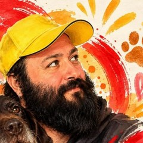
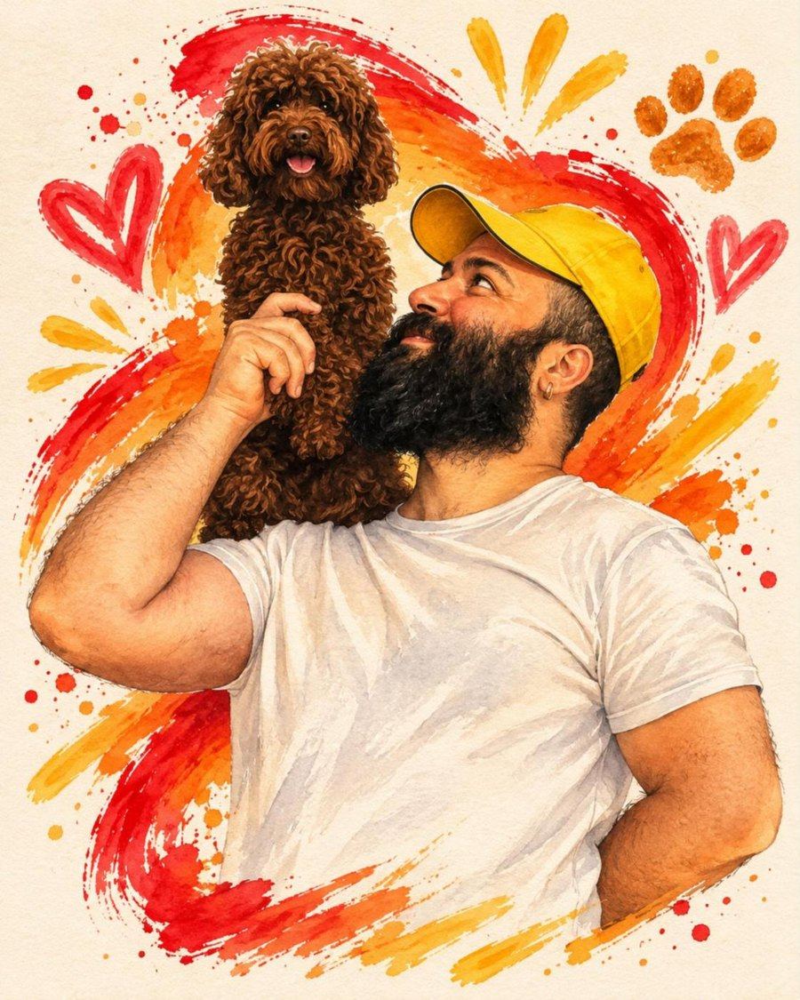
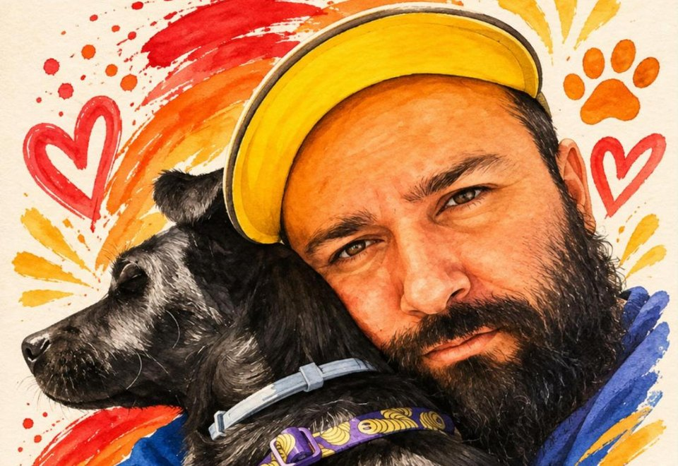

MerhabaGitmek istediğiniz bir yer var ve yol arkadaşı arıyorsunuz.
Oraya varmanın ilk adımı tanışmak.
Ben Mehmet Cihat Keleş. On beş yıl reklam yazarı olarak çalıştım, son on yılımı köpeklere verdim. Bugün Ataşehir'deki evimde köpek misafir ediyor, köpeklerle insanlar arasındaki bağ üzerine yazıyorum.
5 yılevde konaklama
2.000+misafir köpek
Bahçeli evAtaşehir


Konaklama
Köpeğiniz otelde değil, evde kalır.
Kafes yok, ayrı oda yok. Aynı anda yalnızca birkaç misafir ağırlıyorum; günün her saati köpeğinizle ilgilenen kişi benim. Her köpekle önce tanışıyoruz. Köpeğiniz burada misafir, evine kendisi olarak döner.
- 01Tanışma
- 02Gündüz misafirliği
- 03Konaklama
2.550 TLgecelik · 2026 boyunca sabit
Konaklama hakkında her şey →Instagram · @ikinciev.cihat
Köpeklerle
3 kapı-
01
Temel Uyum Terapisişu an ara
İtaat değil, uyum. Köpeğin dış dünyada sakin kalmayı, beklemeyi ve yanındaki insana güvenmeyi öğrendiği birebir çalışma yöntemim.
-
02
Köpeksel Bilgiler Okulası
Köpekler ve onlarla kurduğumuz bağ üzerine denemeler. Yazılar anlamlarına göre birbirine bağlı; bir yerden başlayıp kendi yolunuzu çizebilirsiniz.
okula.mehmetcihatkeles.com -
03
Tarihten Köpekler
Her sabah küçük bir kazı yapılıyor ve tarihin unuttuğu bir köpeğin adı yeniden ortaya çıkıyor.
tarihten.mehmetcihatkeles.com